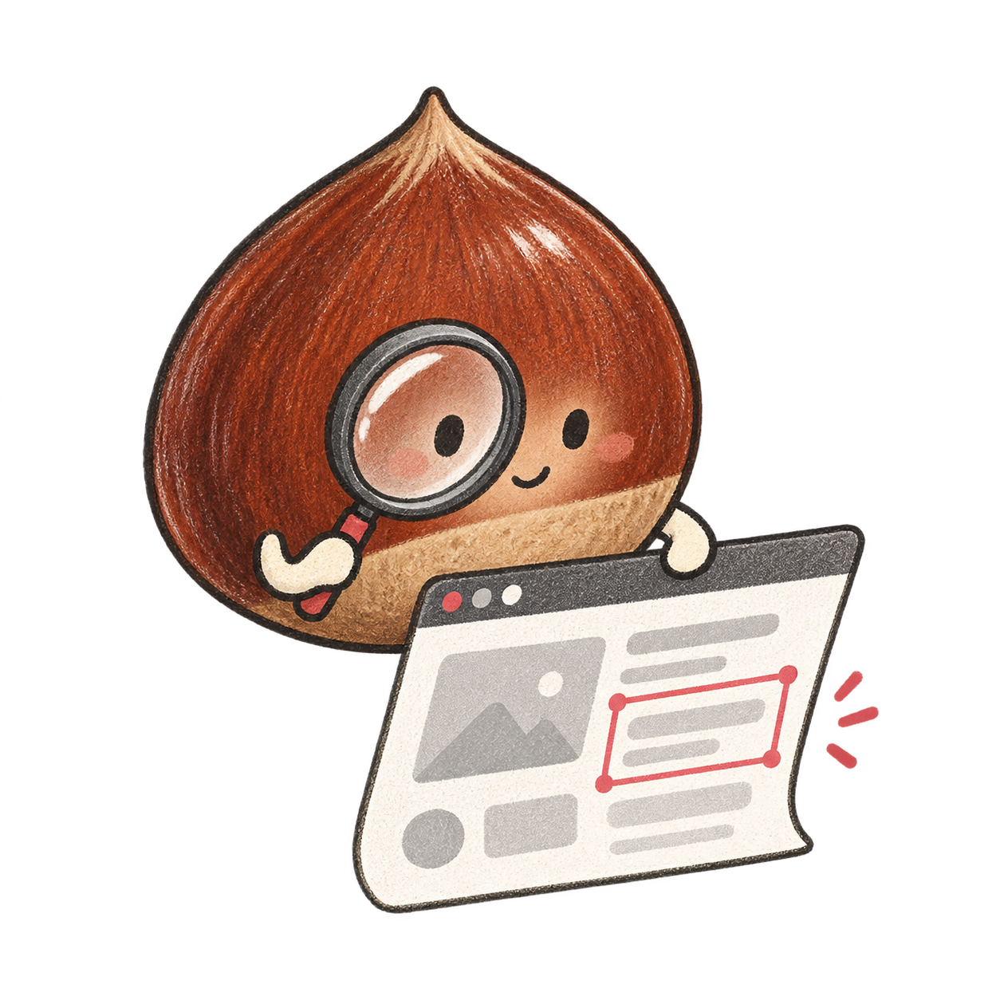

현재 페이지를 확인하고 있습니다.

툴바의 밤티 아이콘을 누르면 현재 페이지를 스캔합니다.
패널은 탭을 따라다니며 자동으로 다시 스캔합니다.
페이지의 UI 패턴을 확인하고 있어요.
분석은 이 브라우저 안에서 진행됩니다.⚠️
페이지가 바뀌었습니다 — 다시 스캔 중…
–
/100
패턴 점수 · AI가 만들었을 확률이 아닙니다.
개선할 부분 찾기
카테고리로 좁히기
폰트·팔레트·라이브러리·취향처럼 일반적인 디자인 선택입니다. AI 생성 근거가 아니며 점수에서 제외됩니다.
도움말·진단 정보
아이콘 또는 단축키로 스캔을 시작하세요. 자동 스캔은 패널이 열려 있고 접근 권한이 있을 때 동작합니다.